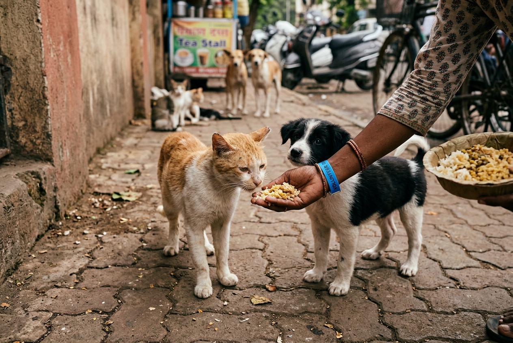
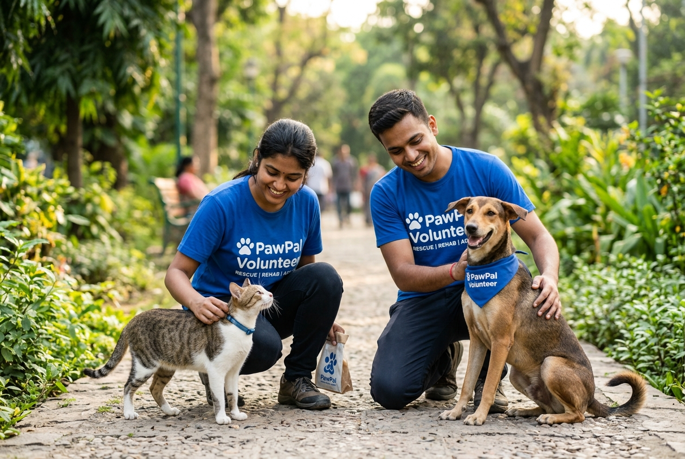

PawPal serves as a trusted ecosystem connecting street reports directly to responsive shelter units.

Project Overview & Mission
We work directly with hyper-local shelters, veterinary clinics, and compassionate citizens. Our platform is built on modern routing triggers to ensure that critical alerts reach the closest verified responders instantly. Join our mission to create a safe, compassionate ecosystem for stray animals.
A Step-by-Step Process
Found an animal that is sick, injured, or in danger? Take a clear photo using your phone camera, describe the situation in your regional language via our Gnani.ai voice assistant, and let our GPS automated tracker locate the animal instantly. Our system routes the ticket immediately.


Tips on how to approach strays
Always maintain a safe distance when approaching an injured stray. Offer clean water or food if the animal is calm, and speak in a soft, soothing voice. Avoid making sudden movements, and wait for local NGO volunteers to arrive with professional medical rescue gear.
Together we can help strays
Becoming a PawPal volunteer means you can directly coordinate rescues, claim emergency distress tickets in your local neighborhood, and update status tracking data. Your effort ensures no street animal goes untreated in urban environments.


Your Actions Count
Every distress report submitted on PawPal triggers automated rescue pathways. Local citizens receive instant updates on when an NGO has claimed the ticket, bringing transparency, accountability, and reassurance to the community.
Stray rescue projects directly influence local cities, environment health, and community harmony.
Promotes public health by implementing community vaccination programs (rabies control) and local sterilization drives, making streets safer for humans and strays alike.
Reduces stray population density humanely, prevents territorial pack conflicts, and fosters a collaborative neighborhood culture of compassion and empathy.
Rescuing an animal in pain creates a profound emotional bond. Feeding or treating street animals instills deep peace and grounds our urban community.